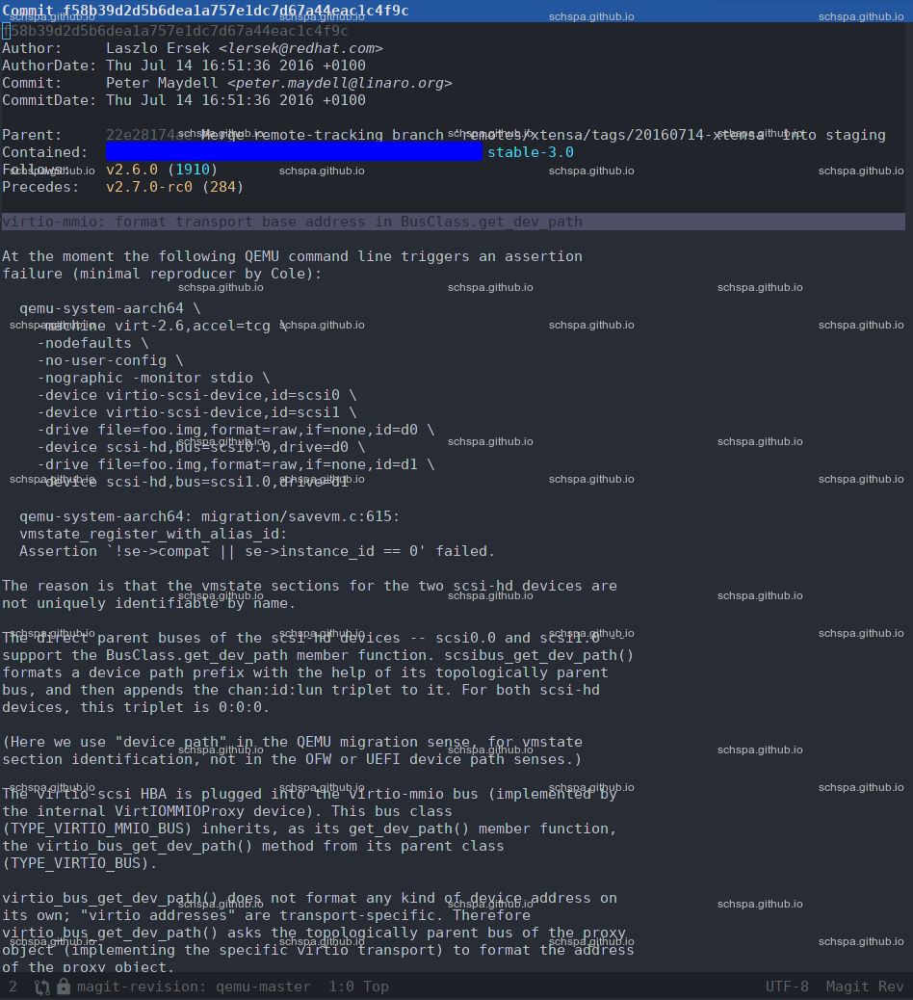

QEMU virtio-9p-device assert failed
Table of Contents
Problems
在xlnx-versal-virt平台上，创建多个相同类型的virtio设备时，会报错
- 启动命令
qemu-system-aarch64 \-machine xlnx-versal-virt -nographic -smp 2 -m 128 \-fsdev local,id=shareid,path=${HOME}/work,security_model=none \-device virtio-9p-device,fsdev=shareid,mount_tag=share \-fsdev local,id=shareid1,path=${HOME}/Music,security_model=none \-device virtio-9p-device,fsdev=shareid1,mount_tag=share1
- 错误信息
qemu-system-aarch64: ../migration/savevm.c:860: vmstate_register_with_alias_id: Assertion `!se->compat || se->instance_id == 0' failed.[1] 999094 abort (core dumped)
Problem analyse
google it.
查一下本地仓库的提交记录

这个提交好好的躺在这里呢, 2333.
稍微调试一下
gdb调试一下
Reading symbols from ./qemu-system\-aarch64...(gdb) rStarting program: /home/schspa/work/qemu-master/build/qemu-system-aarch64 -machine xlnx-versal-virt -nographic -smp 2 -m 128 -fsdev local,id=shareid,path=/home/schspa/work,security_model=none-device virtio-9p-device,fsdev=shareid,mount_tag=share -fsdev local,id=shareid1,path=/home/schspa/Music,security_model=none -device virtio-9p-device,fsdev=shareid1,mount_tag=share1[Thread debugging using libthread_db enabled]Using host libthread_db library "/usr/lib/libthread_db.so.1".[New Thread 0x7ffff270c640 (LWP 1002865)][New Thread 0x7ffff19c0640 (LWP 1002870)][New Thread 0x7ffff11bf640 (LWP 1002871)]qemu-system-aarch64: ../migration/savevm.c:860: vmstate_register_with_alias_id: Assertion `!se->compat || se->instance_id == 0' failed.Thread 1 "qemu-system-aar" received signal SIGABRT, Aborted.0x00007ffff5e5f615 in raise () from /usr/lib/libc.so.6(gdb) bt#0 0x00007ffff5e5f615 in raise () at /usr/lib/libc.so.6#1 0x00007ffff5e48862 in abort () at /usr/lib/libc.so.6#2 0x00007ffff5e48747 in _nl_load_domain.cold () at /usr/lib/libc.so.6#3 0x00007ffff5e57bf6 in () at /usr/lib/libc.so.6#4 0x000055555590595c in vmstate_register_with_alias_id (obj=<optimized out>, instance_id=<optimized out>, instance_id@entry=4294967295, vmsd=vmsd@entry=0x555556834c00 <vmstate_virtio_9p>, opaque=opaque@entry=0x555557b459b0, alias_id=alias_id@entry=-1, required_for_version=required_for_version@entry=0, errp=0x7fffffffd4c0) at ../migration/savevm.c:860#5 0x0000555555f06b7f in device_set_realized (obj=<optimized out>, value=<optimized out>, errp=0x7fffffffd540) at ../hw/core/qdev.c:784#6 0x0000555555e4cc66 in property_set_bool (obj=0x555557b459b0, v=<optimized out>, name=<optimized out>, opaque=0x555556a96150, errp=0x7fffffffd540) at ../qom/object.c:2255#7 0x0000555555e4fb18 in object_property_set (obj=obj@entry=0x555557b459b0, name=name@entry=0x5555561eecfd "realized", v=v@entry=0x555557b47e40, errp=errp@entry=0x5555569c6ae8 <error_fatal>) at ../qom/object.c:1400#8 0x0000555555e4bc30 in object_property_set_qobject (obj=obj@entry=0x555557b459b0, name=name@entry=0x5555561eecfd "realized", value=value@entry=0x555557b47d80, errp=errp@entry=0x5555569c6ae8 <error_fatal>) at ../qom/qom-qobject.c:28#9 0x0000555555e50105 in object_property_set_bool (obj=0x555557b459b0, name=name@entry=0x5555561eecfd "realized", value=value@entry=true, errp=errp@entry=0x5555569c6ae8 <error_fatal>) at ../qom/object.c:1470#10 0x0000555555f0706e in qdev_realize (dev=<optimized out>, bus=bus@entry=0x5555578cfbb8, errp=errp@entry=0x5555569c6ae8 <error_fatal>) at ../hw/core/qdev.c:389#11 0x0000555555a0c420 in qdev_device_add (opts=0x555556a946b0, errp=errp@entry=0x5555569c6ae8 <error_fatal>) at ../softmmu/qdev-monitor.c:665#12 0x0000555555daf81f in device_init_func (opaque=<optimized out>, opts=<optimized out>, errp=0x5555569c6ae8 <error_fatal>) at ../softmmu/vl.c:1201#13 0x0000555555ffba2a in qemu_opts_foreach (list=<optimized out>, func=func@entry=0x555555daf810 <device_init_func>, opaque=opaque@entry=0x0, errp=0x5555569c6ae8 <error_fatal>) at ../util/qemu-option.c:1163#14 0x0000555555db20fe in qemu_create_cli_devices () at ../softmmu/vl.c:2488#15 qmp_x_exit_preconfig (errp=<optimized out>) at ../softmmu/vl.c:2527#16 0x0000555555db5b7b in qmp_x_exit_preconfig (errp=<optimized out>) at ../softmmu/vl.c:2521#17 qemu_init (argc=<optimized out>, argv=<optimized out>, envp=<optimized out>) at ../softmmu/vl.c:3533#18 0x000055555589d219 in main (argc=<optimized out>, argv=<optimized out>, envp=<optimized out>) at ../softmmu/main.c:49(gdb) f 4#4 0x000055555590595c in vmstate_register_with_alias_id (obj=<optimized out>, instance_id=<optimized out>, instance_id@entry=4294967295, vmsd=vmsd@entry=0x555556834c00 <vmstate_virtio_9p>, opaque=opaque@entry=0x555557b459b0, alias_id=alias_id@entry=-1, required_for_version=required_for_version@entry=0, errp=0x7fffffffd4c0) at ../migration/savevm.c:860860 assert(!se->compat || se->instance_id == 0);(gdb) info localsse = 0x555557c6fe60__PRETTY_FUNCTION__ = "vmstate_register_with_alias_id"__func__ = "vmstate_register_with_alias_id"(gdb) p se$1 = (SaveStateEntry *) 0x555557c6fe60(gdb) p *se$2 = {entry = {tqe_next = 0x0,tqe_circ = {tql_next = 0x0,tql_prev = 0x0}},idstr = "virtio-mmio@", 'f' <repeats 16 times>, "/virtio-9p", '\000' <repeats 217 times>,instance_id = 1,alias_id = -1,version_id = 1,load_version_id = 0,section_id = 31,load_section_id = 0,ops = 0x0,vmsd = 0x555556834c00 <vmstate_virtio_9p>,opaque = 0x555557b459b0,compat = 0x555557c6ffc0,is_ram = 0}
从上边可以看到，se->compat = 0x555557c6ffc0, se->instance_id = 1.所以触发了代码中的assert，导致abort.
由于不了解这一块的代码逻辑，只能研究一下之前别人提交的patch
看看之前已经合入的修复patch
(1) The virtio device whose devpath is to be formatted resides on a
virtio-mmio bus that is implemented by a VirtIOMMIOProxy object. Ask
the parent bus of VirtIOMMIOProxy to format the device path of
VirtIOMMIOProxy, as a path prefix. (This is identical to what
virtio_bus_get_dev_path() does.)
(2) Append the base address of VirtIOMMIOProxy to the device path, such
as:
- virtio-mmio@000000000a003e00,
- virtio-mmio@000000000a003c00.
修复方法中有提到修复的方法，从comment中可知，修复中为VirtIOMMIOProxy的bus添加了get_dev_path的实现,最终获取设备时会生成virtio-mmio@000000000a003e00这样的设备名称.
回过头看我们的设备名称
(gdb) print se->idstr$6 = "virtio-mmio@", 'f' <repeats 16 times>, "/virtio-9p", '\000' <repeats 217 times>
从这里可以看到，这里获取到的设备名称是virtio-mmio@ffffffffffffffff/virtio-9p 这样看来，提交的patch好像没有生效. 2333
调试以下修复的patch
这里我们看一下virtio_mmio_bus_get_dev_path的执行情况:
打上断点，go
Thread 1 "qemu-system-aar" hit Breakpoint 1, virtio_mmio_bus_get_dev_path (dev=0x555557a1b0d0) at ../hw/virtio/virtio-mmio.c:735735 virtio_mmio_bus = qdev_get_parent_bus(dev);(gdb) n736 virtio_mmio_proxy = VIRTIO_MMIO(virtio_mmio_bus->parent);(gdb)737 proxy_path = qdev_get_dev_path(DEVICE(virtio_mmio_proxy));(gdb)736 virtio_mmio_proxy = VIRTIO_MMIO(virtio_mmio_bus->parent);(gdb)737 proxy_path = qdev_get_dev_path(DEVICE(virtio_mmio_proxy));(gdb)747 if (!virtio_mmio_proxy->format_transport_address) {(gdb)752 proxy_sbd = SYS_BUS_DEVICE(virtio_mmio_proxy);(gdb)753 assert(proxy_sbd->num_mmio == 1);(gdb) p proxy_sbd->mmio$1 = {{addr = 18446744073709551615,memory = 0x5555579404c0}, {addr = 0,memory = 0x0} <repeats 31 times>}(gdb) p /x proxy_sbd->mmio$2 = {{addr = 0xffffffffffffffff,memory = 0x5555579404c0}, {addr = 0x0,memory = 0x0} <repeats 31 times>}(gdb)从这里可以看到，生成名字时用的address就是0xffffffffffffffff. 所以这个patch是没什么问题的。
看看这个地址为什么不对
首先se的类型是SysBusDevice *, 对应的相关代码是sysbus.c
static void sysbus_mmio_map_common(SysBusDevice *dev, int n, hwaddr addr,bool may_overlap, int priority){assert(n >= 0 && n < dev->num_mmio);if (dev->mmio[n].addr == addr) {/* ??? region already mapped here. */return;}if (dev->mmio[n].addr != (hwaddr)-1) {/* Unregister previous mapping. */memory_region_del_subregion(get_system_memory(), dev->mmio[n].memory);}dev->mmio[n].addr = addr;if (may_overlap) {memory_region_add_subregion_overlap(get_system_memory(),addr,dev->mmio[n].memory,priority);}else {memory_region_add_subregion(get_system_memory(),addr,dev->mmio[n].memory);}}void sysbus_mmio_unmap(SysBusDevice *dev, int n){assert(n >= 0 && n < dev->num_mmio);if (dev->mmio[n].addr != (hwaddr)-1) {memory_region_del_subregion(get_system_memory(), dev->mmio[n].memory);dev->mmio[n].addr = (hwaddr)-1;}}
从代码中可知，dev->mmio[n].addr会在调用sysbus_mmio_map相关函数的时候赋值，而且默认值是-1.
看一看virtio-mmio的创建代码
平台xlnx-versal-virt的相关代码为:
#define NUM_VIRTIO_TRANSPORT 8static void create_virtio_regions(VersalVirt *s){int virtio_mmio_size = 0x200;int i;for (i = 0; i < NUM_VIRTIO_TRANSPORT; i++) {char *name = g_strdup_printf("virtio%d", i);hwaddr base = MM_TOP_RSVD + i * virtio_mmio_size;int irq = VERSAL_RSVD_IRQ_FIRST + i;MemoryRegion *mr;DeviceState *dev;qemu_irq pic_irq;pic_irq = qdev_get_gpio_in(DEVICE(&s->soc.fpd.apu.gic), irq);dev = qdev_new("virtio-mmio");object_property_add_child(OBJECT(&s->soc), name, OBJECT(dev));sysbus_realize_and_unref(SYS_BUS_DEVICE(dev), &error_fatal);sysbus_connect_irq(SYS_BUS_DEVICE(dev), 0, pic_irq);mr = sysbus_mmio_get_region(SYS_BUS_DEVICE(dev), 0);memory_region_add_subregion(&s->soc.mr_ps, base, mr);g_free(name);}...}
经过查看，这里的初始化方法不会调用sysbus_mmio_map相关函数，所以这里的地址为-1.
看看其他平台
下边是arm virt平台的初始化代码.
for (i = 0; i < NUM_VIRTIO_TRANSPORTS; i++) {int irq = vms->irqmap[VIRT_MMIO] + i;hwaddr base = vms->memmap[VIRT_MMIO].base + i * size;sysbus_create_simple("virtio-mmio", base,qdev_get_gpio_in(vms->gic, irq));}
在sysbus_create_simple的实现中,系统会调用sysbus_mmio_map来初始化设备地址
DeviceState *sysbus_create_varargs(const char *name,hwaddr addr, ...){DeviceState *dev;SysBusDevice *s;va_list va;qemu_irq irq;int n;dev = qdev_create(NULL, name);s = SYS_BUS_DEVICE(dev);qdev_init_nofail(dev);if (addr != (hwaddr)-1) {sysbus_mmio_map(s, 0, addr);}va_start(va, addr);n = 0;while (1) {irq = va_arg(va, qemu_irq);if (!irq) {break;}sysbus_connect_irq(s, n, irq);n++;}va_end(va);return dev;}
至此，我们已经看到了故障的root course. 下边就是去寻找解决方案了。
修复方案
下边是尝试的几个解决方案:
添加sysbus_mmio_map的调用
在xlnx-versal-virt平台的virtio-mmio初始化时调用sysbus_mmio_map
modified hw/arm/xlnx-versal-virt.c@@ -490,6 +490,7 @@ static void create_virtio_regions(VersalVirt *s)object_property_add_child(OBJECT(&s->soc), name, OBJECT(dev));sysbus_realize_and_unref(SYS_BUS_DEVICE(dev), &error_fatal);sysbus_connect_irq(SYS_BUS_DEVICE(dev), 0, pic_irq);+ sysbus_mmio_map(SYS_BUS_DEVICE(dev), 0, base);mr = sysbus_mmio_get_region(SYS_BUS_DEVICE(dev), 0);memory_region_add_subregion(&s->soc.mr_ps, base, mr);g_free(name);
很不幸，这个方案是行不同的，因为系统会出现另外一个问题
qemu-system-aarch64: ../softmmu/memory.c:2440: memory_region_add_subregion_common: Assertion `!subregion->container' failed.
显而易见，这个是因为系统在调用sysbus_mmio_map的时候已经将对应的region添加到了系统中去了. 再次添加就会出现错误.
使用arm virt平台上的初始化
将xlnx-versal-virt平台的virtio-mmio也使用与arm virt相同的方法来初始化，patch如下
modified hw/arm/xlnx-versal-virt.c@@ -478,21 +478,12 @@ static void create_virtio_regions(VersalVirt *s)int i;for (i = 0; i < NUM_VIRTIO_TRANSPORT; i++) {- char *name = g_strdup_printf("virtio%d", i);hwaddr base = MM_TOP_RSVD + i * virtio_mmio_size;int irq = VERSAL_RSVD_IRQ_FIRST + i;- MemoryRegion *mr;- DeviceState *dev;qemu_irq pic_irq;pic_irq = qdev_get_gpio_in(DEVICE(&s->soc.fpd.apu.gic), irq);- dev = qdev_new("virtio-mmio");- object_property_add_child(OBJECT(&s->soc), name, OBJECT(dev));- sysbus_realize_and_unref(SYS_BUS_DEVICE(dev), &error_fatal);- sysbus_connect_irq(SYS_BUS_DEVICE(dev), 0, pic_irq);- mr = sysbus_mmio_get_region(SYS_BUS_DEVICE(dev), 0);- memory_region_add_subregion(&s->soc.mr_ps, base, mr);- g_free(name);+ sysbus_create_simple("virtio-mmio", base, pic_irq);}for (i = 0; i < NUM_VIRTIO_TRANSPORT; i++) {
这样改qemu可以启动，但是在访问virtio设备device内存时会失败
为什么virtio device mmio访问不了？
这个和xlnx-versal-virt平台的qemu实现有关系.
- sysbus_mmio_map会将设备的mmio地址段映射到system_memory中，这个是个全剧变量。
xlnx-versal-virt在cpu初始化时，系统设置cpu访问到的内存空间为
Versal.fpd.apu.mr这个自定义的memory region, 见下面的代码片段.
static void versal_create_apu_cpus(Versal *s){int i;for (i = 0; i < ARRAY_SIZE(s->fpd.apu.cpu); i++) {Object *obj;object_initialize_child(OBJECT(s), "apu-cpu[*]", &s->fpd.apu.cpu[i],XLNX_VERSAL_ACPU_TYPE);obj = OBJECT(&s->fpd.apu.cpu[i]);object_property_set_int(obj, "psci-conduit", s->cfg.psci_conduit,&error_abort);if (i) {/* Secondary CPUs start in PSCI powered-down state */object_property_set_bool(obj, "start-powered-off", true,&error_abort);}object_property_set_int(obj, "core-count", ARRAY_SIZE(s->fpd.apu.cpu),&error_abort);object_property_set_link(obj, "memory", OBJECT(&s->fpd.apu.mr),&error_abort);qdev_realize(DEVICE(obj), NULL, &error_fatal);}}xlnx-versal-virt在处理system_memory时，将Versal.fpd.apu.mr设置为system_memory的子region.
从xlnx的代码中可知，在这个平台上,Versal.fpd.apu.mr是system_memory的子region，这样，aarch64的CPU自然就没有办法访问到system_memory中的virtio外设1了
/* Make the APU cpu address space visible to virtio and other* modules unaware of muliple address-spaces. */memory_region_add_subregion_overlap(get_system_memory(),0, &s->soc.fpd.apu.mr, 0);
不太OK的解决方案
既然上边两个看起来ok的解决方案都有问题，那么就用个不太好的解决方案吧。
modified hw/arm/xlnx-versal-virt.c@@ -490,6 +490,7 @@ static void create_virtio_regions(VersalVirt *s)object_property_add_child(OBJECT(&s->soc), name, OBJECT(dev));sysbus_realize_and_unref(SYS_BUS_DEVICE(dev), &error_fatal);sysbus_connect_irq(SYS_BUS_DEVICE(dev), 0, pic_irq);+ SYS_BUS_DEVICE(dev)->mmio[0].addr = base;mr = sysbus_mmio_get_region(SYS_BUS_DEVICE(dev), 0);memory_region_add_subregion(&s->soc.mr_ps, base, mr);g_free(name);
看起来这里直接修改了对应subsys的mmio addr，这也是无奈之举，其实这个平台上只是需要设置好这个地址就可以了。
提交的qemu中的解决方案
Footnotes:
sysbus_create_simple将virtio的内存区域注册到了system_memory中了